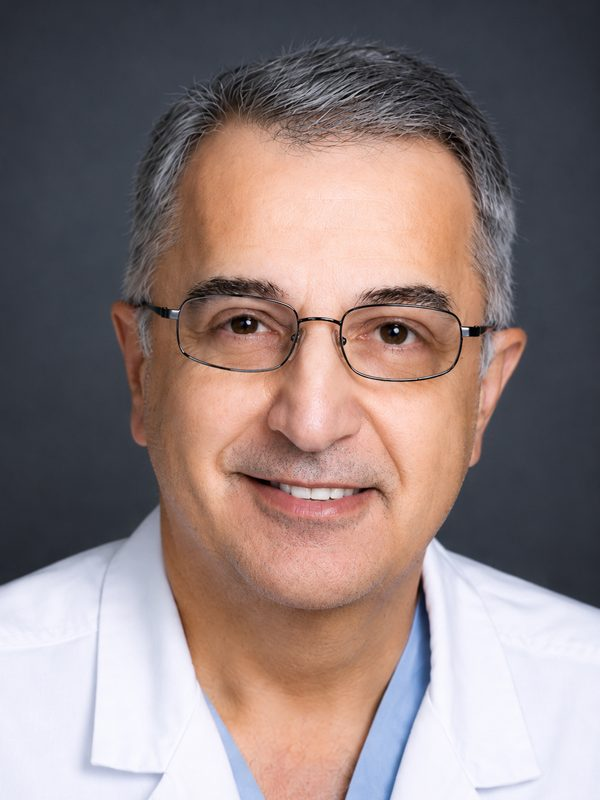

MD, FACP, FACC, FSCAI, FCCP, FSVMB
Dr. Kazziha takes great satisfaction in being able to provide the latest in treatment technology to those with cardiovascular disease.
"We are pleased to formally announce the establishment of the McLaren Heart & Vascular Institute (MHVI), our systemwide initiative to unify McLaren subsidiary hospitals' cardiology, vascular, and cardiothoracic services." Interventional cardiologist Samer Y. Kazziha, MD, FACP, FACC, FSCAI, FCCP, FSVMB, will lead this effort as the program's Chief Medical Director.
Read the Full Announcement →Dr. Kazziha received his medical education at the University of Damascus, Health Center and Affiliate Hospitals. He completed fellowships in Critical Care Medicine and Cardiovascular Preventive Medicine at the University Health Center of Pittsburgh.
He trained in Internal Medicine and Cardiology at the Medical College of Virginia, Interventional Cardiology at William Beaumont Hospital Royal Oak, and Vascular and Intervention at the Cleveland Clinic.
Dr. Kazziha received the National Research Service Award in Epidemiology from NIH in 1985 and the Cardiology Research Training Award in 1990. He was nominated for the National Young Investigator Award for the Southern Society for Clinical Investigation in 1992. He is actively involved in clinical research and has published on interventional cardiology and vascular disease topics.
Dr. Kazziha is regionally recognized for his excellence in both clinical and administrative roles, and he has developed cardiovascular programs at several hospitals, including St. John's Hospital. He served as Medical Director for Cardiovascular Services at Mount Clemens Regional Medical Center's Mat Gaberty Heart Center, later as Executive Medical Director of the cardiovascular service line at Crittenton Hospital (currently APRH), and most recently as Chief of the Cardiovascular Service Line at Henry Ford Macomb Hospital.
Currently, Dr. Kazziha is the President of Cardiovascular Consultants and Clinical Associate Professor, WSU School of Medicine.
Dr. Kazziha has served in several non-profit organizations aiming for better cardiovascular care in the community, such as the Ibn Sina Fundraiser with NAAMA NextGen and WSU.